Instalação de Sistemas Operacionais
Introdução
Existia uma época que sistemas operacionais eram feitos para máquinas específicas e era necessário um conhecimento relativamente profundo de TI para garantir o sucesso da instalação... Hoje em dia até o Linux tem uma excelente compatibilidade com grande parte do hardware para usuário final e pode ser instalado em menos de 30 minutos sem quase nenhum conhecimento de informática.
Não é mais necessário pagar um técnico 50 reais para fazer uma simples instalação de sistema padrão (erroneamente conhecido pela turma como formatação), existem razões para pagar por uma instalação sim quando há limpeza, configuração e atualização de BIOS, verificação de HD e RAM... Mas sejamos sinceros, a grande maioria dos usuário sequer se preocupa com isso.
Nos dias de hoje é mais seguro você mesmo baixar e instalar o seu sistema (ao invés pagar 50 reais para ter um sistema modificado por algum indiano mal intencionado instalado por alguém sem formação em TI), e essa documentação te ensinará o básico do processo. Por hora a única coisa a se ficar atento é fazer o backup prévio dos arquivos do HD em que você quer instalar o sistema, backup do pendrive que vai ser usado e alterar o processo de instalação entre BIOS ou UEFI.
Primeiro Passo: Baixar o Sistema
O primeiro passo para se instalar um sistema é baixar a mídia de instalação do sistema para então passar para um pendrive e depois começar a instalação. Baixe uma das imagens abaixo:
- Linux Mint
- Debian 64 bits (NetInst)
- Debian 32 bits (DVD iso)
- Batocera
- Proxmox (baixe a versão mais recente do Proxmox VE ISO Installer por Torrent)
- Arch Linux
- FreeBSD
- OpenBSD
- NetBSD
- Haiku
- Windows (site oficial)
- Windows (link direto pelo Bob Pony)
Passo Opcional: Verificar a Integridade do Arquivo
Você pode conferir a integridade do arquivo baixado (comparando com o valor de hash informado pelo site) e a integridade do arquivo passado para o pendrive (comparando com o valor de hash do arquivo em disco) utilizando o Md5Checker.
Basta arrastar o arquivo de .ISO para a janela do Md5Checker e verificar se o código do Md5 do site que você baixou a .ISO (ou qualquer que seja o formato de arquivo de mídia de gravação) é idêntico ao código que você obtém através da análise do arquivo em disco, e se o código da análise do arquivo em disco é idêntico ao código obtido da análise do arquivo passado para o pen drive. Por questão de segurança é interessante verificar se o arquivo que está no pen drive é íntegro se comparado com o site ou pelo menos integro após a transferência para o pen drive.

BIOS ou UEFI?
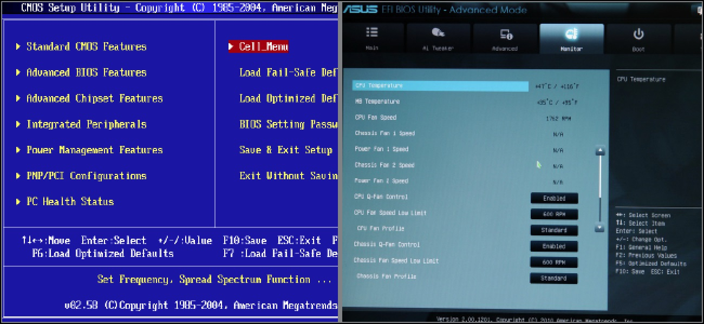BIOS e UEFI são as interfaces para os computadores iniciarem o sistema operacional. A BIOS utiliza a tabela de partição do tipo Master Boot Record (MBR) enquanto UEFI utiliza GUID Partition Table (GPT), grosso modo a BIOS é um sistema mais antigo e simples enquanto o UEFI é mais novo e oferece opções mais avançadas.
Hoje em dia o UEFI já subsitui a BIOS nos computadores mais modernos, podendo ainda oferecer suporte a sistemas mais antigos que foram feitos para funcionar com BIOS por meio do Compatibility Support Module (ou CSM). Caso seu computador utilize UEFI sempre dê preferência a instalar os sistemas em UEFI sem CSM ativo.
Não há uma regra absoluta para dizer se o seu computador utiliza BIOS ou UEFI e portanto isso deve ser verificado caso a caso (computadores mais novos por via de regra trabalham com UEFI). Para verificar se o seu sistema é UEFI você pode:
- Verificar o suporte na página do produto no site do Fabricante da sua placa mãe.
- Pelo próprio visual, a BIOS tende a ser mais simples e estática enquanto UEFI tende a ser mais gráfico.
- Acessar o SETUP da sua placa mãe (geralmente pressionando F2 ou Delete durante a inicialização do sistema) e verificar se na guia BOOT existe opção de seleção de modo UEFI (se suporta a utilização de mouse você está em UEFI).
Faça backup do conteúdo do pendrive antes de prosseguir!
Com Secure Boot ou sem Secure Boot? Eis a questão
Secure Boot é um recurso que quando ativo só permite a inicialização de um sistema com assinaturas válidas, é uma opção interessante em termos de segurança MAS limita o tipo de conteúdo que você pode inicializar na sua máquina. Como essa documentação é para iniciantes ela foi feita presumindo que você tenha desativado o Secure Boot no Setup da BIOS/UEFI e não tenha marcado a opção Secure Boot Support no Ventoy.
Se você quiser fazer uso do Secure Boot é importante que você:
- Habilite essa opção no Setup da BIOS/UEFI;
- Marque a opção Secure Boot Support no Ventoy;
- Utilize uma .ISO de uma distribuição que dê suporte a Secure Boot
Então caso você não esteja conseguindo inicializar o sistema verifique as condições citadas no parágrafo acima ou simplesmente desabilite o Secure Boot.
Gravação do pendrive com o balenaEtcher (para um único sistema)
Caso você queira apenas passar o sistema para o pendrive, instalar na máquina e tocar sua vida, baixe essa ferramenta:
balenaEtcherSelecione a versão para o seu sistema operacional e clique no botão de Download:
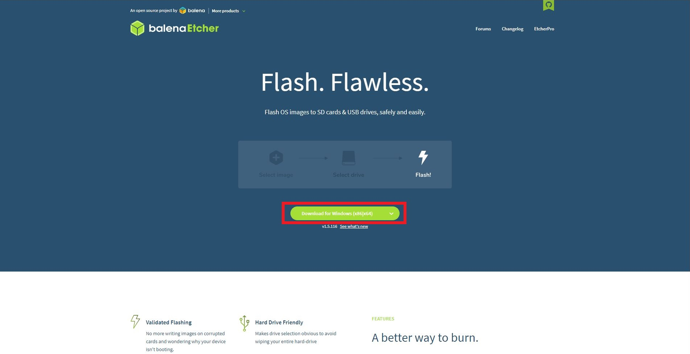Selecione o arquivo de imagem do sistema (seja .iso ou .img) na opção Flash from file:
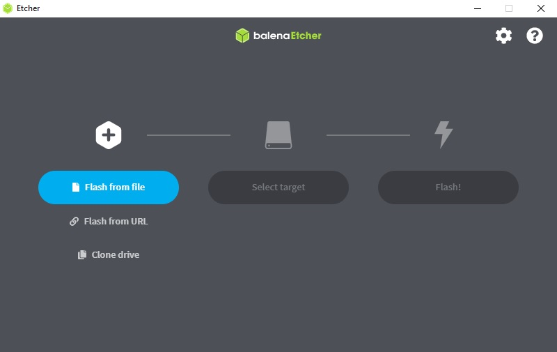Vá para a seleção de dispositivos em Select target:
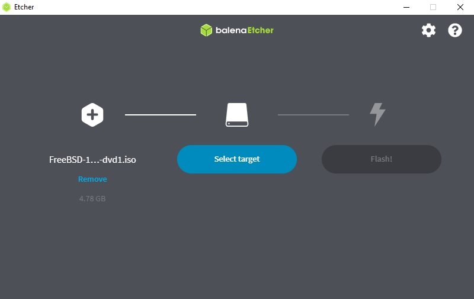Selecione o seu pendrive em e depois clique em Select:
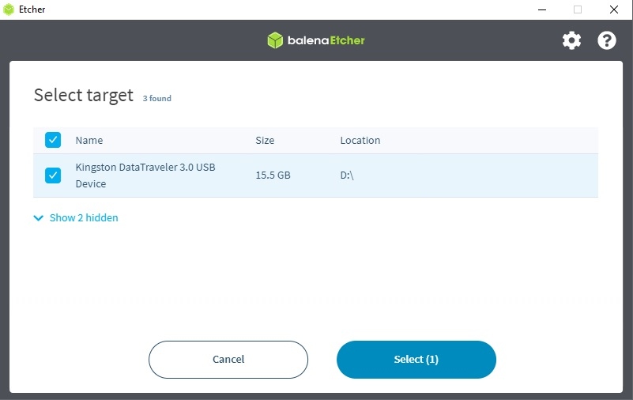Gravação do Pendrive com o Ventoy (para multiplas imagens de sistema)
Caso você queira fazer um pendrive com suporte a particionamento e mais de 1 sistema por pendrive utilize essa opção.
VentoySelecione a guia Downloads:
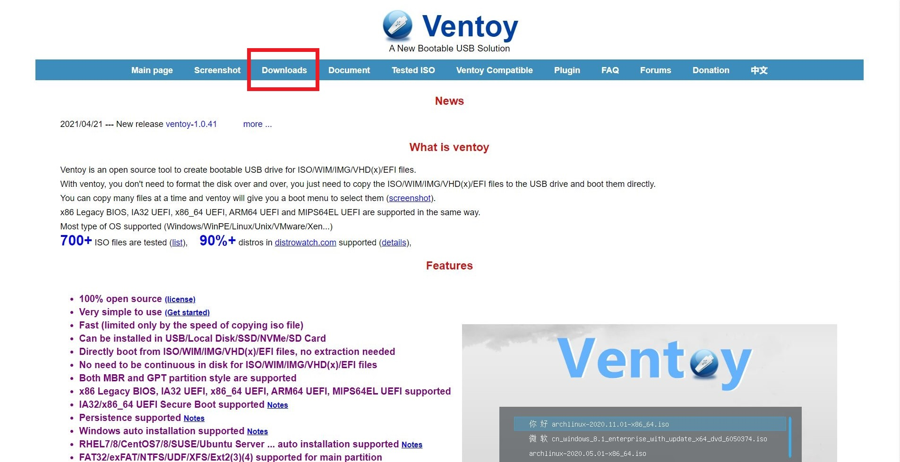Selecione o executável para o seu sistema:
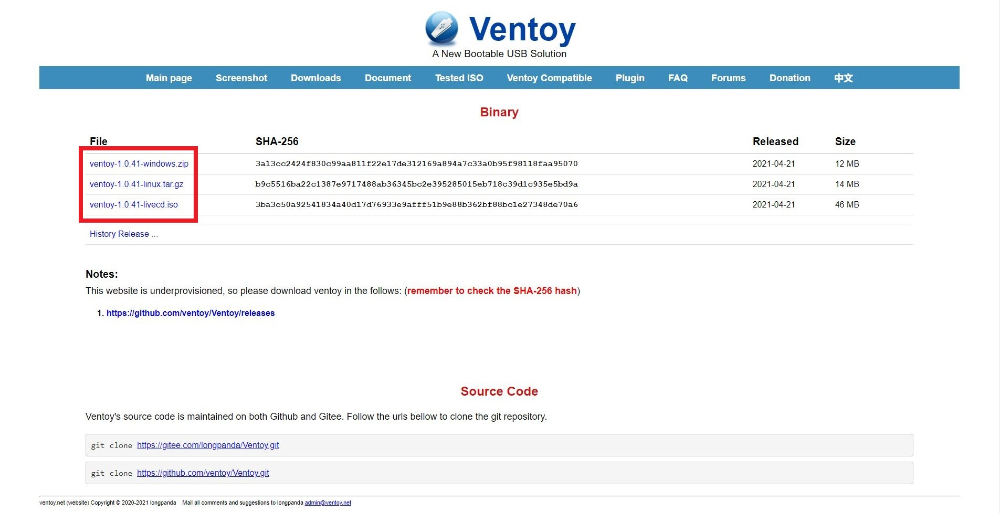Selecione o dispositivo:
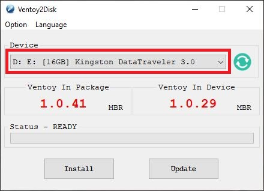Selecione o tipo de tabela de partição, MBR para BIOS e GPT para UEFI:
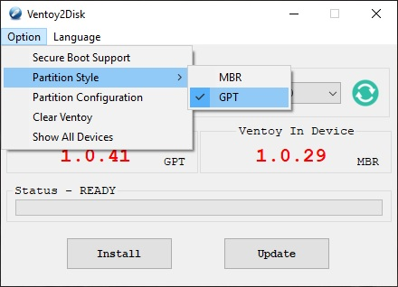Selecione Install:
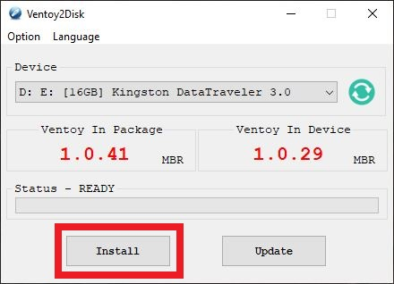Ao fim da gravação basta mover os arquivos de imagem de sistema para o pendrive:
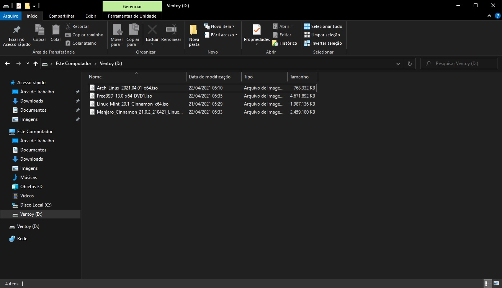Selecionando o Dispositivo de BOOT
Durante a inicialização do computador aperte a tecla de acesso ao SETUP, geralmente F2 ou Delete (essa informação costuma aparecer na tela quando você liga o computador):
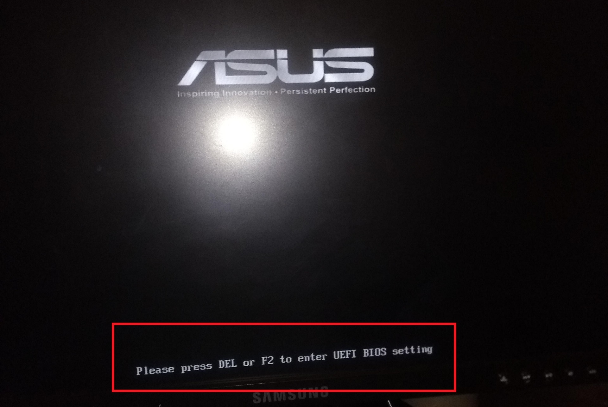Na guia BOOT você encontrará alguma opção como Select Boot Device, selecione o seu pendrive como dispositivo de inicialização, após isso vá na opção Save and Restart para reiniciar para a instalação.

Se você fez tudo certinho seu computador vai reiniciar e já ir pro menu de instalação de sistema.
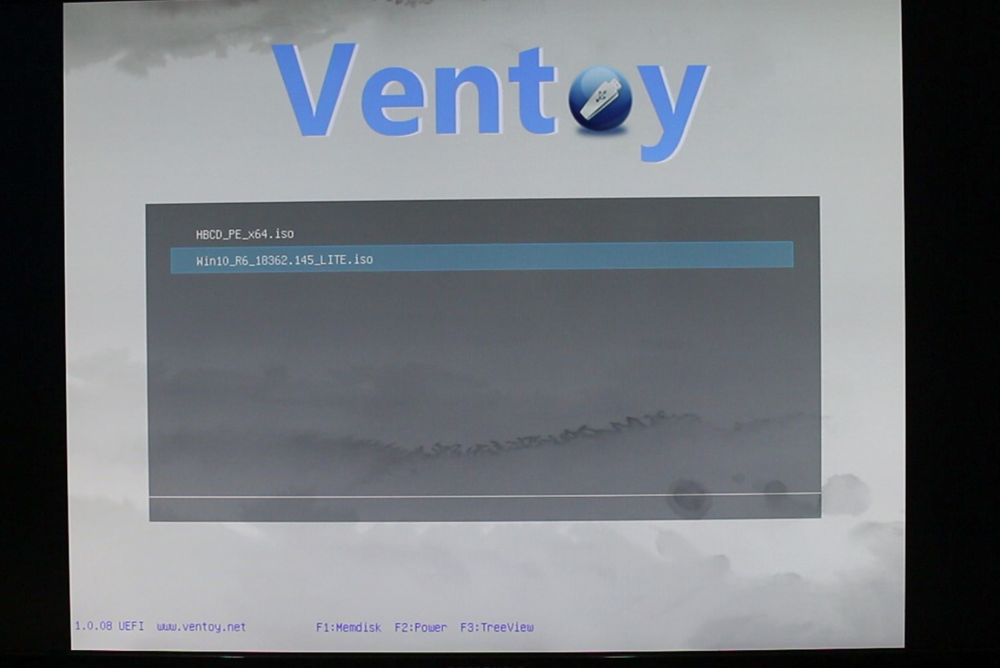Fique atento!
Algumas placas-mãe possuem uma seleção para A ORDEM ENTRE TIPOS DE DISPOSITIVOS (como no exemplo abaixo)...
- First Boot Device: Hard Disk (Western Digital WD10EZEX)
- Second Boot Device: CD-ROM
- Third Boot Device: PXE
E uma outra de SELEÇÃO DE PRIORIDADE DENTRE TODOS OS TIPOS DE DISPOSITIVOS de inicialização, por exemplo:
Hard Disk Boot Priotiry:
- 1 - HDD Western Digital WD10EZEX
- 2 - USB HDD Kingston Pen Drive
Nesse caso você tem que especificar o tipo de dispositivo de inicialização (se é CDROM, PXE, HARD DISK. etc.) para só então selecionar o dispositivo específico daquele tipo como prioridade de boot.
Não entendeu? Explico: Você disse para o sistema para iniciar pelo Hard Disk, mas você ainda precisa selecionar QUAL Hard Disk será inicializado, que no exemplo acima NÃO VAI SER o pendrive que você preparou.
Então se você quer inicializar pelo pendrive além de setar o First Boot Device para Hard Disk você ainda precisa setar a prioridade do pendrive para a mais alta em Hard Disk Boot Priority, como no exemplo abaixo:
- 1 - USB HDD Kingston Pen Drive
- 2 - HDD Western Digital WD10EZEX
Tá... Já passei o sistema para o pendrive... Mas como instalo?
- Instalação do Linux Mint
- Instalação do Debian
- Instalação do Batocera
- Instalação do Proxmox
- Instalação do Arch Linux
- Instalação do FreeBSD
- Instalação do OpenBSD
- Instalação do NetBSD
- Instalação do Haiku
- Instalação do OpenWRT, DD-WRT etc.
- Instalação do Hackintosh (old way)
- Instalação do Hackintosh (new way)
- Instalação do Windows
E depois de instalar o sistema? O que eu instalo?
Em Alternativas de Software você encontrará uma seleção de alternativas de softwares essenciais para você ficar bem situado com o seu sistema.